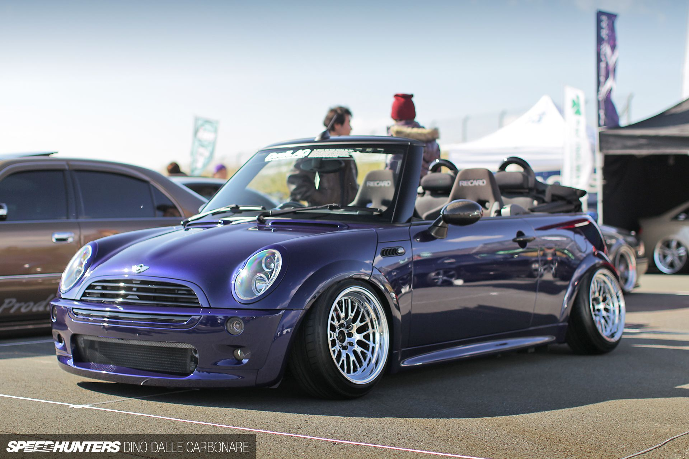
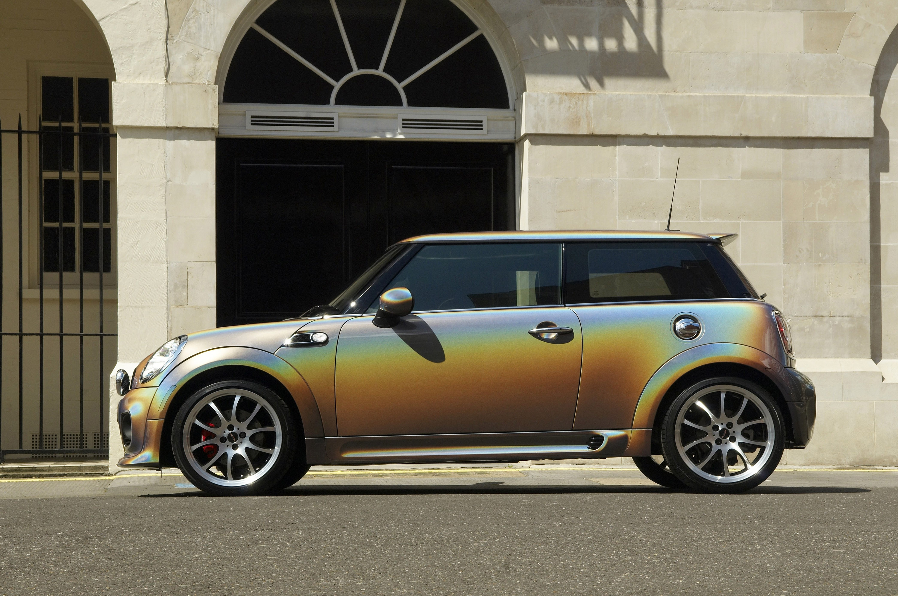

тематический сайт на тему "автомобильный бренд mini"




Первый прототип, названный за его цвет «The Orange Box», был готов к 1957 году, но испытания и доработки заняли ещё почти два года. Первые автомобили были запущены в производство в мае 1959 года, но до августа в продажу они не поступали для создания необходимых запасов в дилерских центрах. На создание совершенно нового автомобиля от идеи до серийного производства ушло 2 года 5 месяцев
_Countryman_848cc_January_1961.JPG)
фициальное начало продаж состоялось 26 августа 1959 года. К этому дню уже было собрано несколько тысяч автомобилей, 2000 отправлено на экспорт — продажи стартовали одновременно почти в 100 странах мира. Автомобили собирались на двух заводах: в Коули (Оксфорд) под названием Morris Mini Minor и в Лонгбридже (Бирмингем) под названием Austin Seven. Последнее название (в буквальном графическом изображении Austin Se7en с некоторым поворотом цифры по часовой стрелке, что позволяло воспринимать её и как «7» и как «v»)[4] было использовано «в память» о чрезвычайно популярной малолитражке 1930-х годов Austin 7. За рубежом автомобили продавались под названиями Austin 850 и Morris 850 (от округлённого показателя рабочего объёма двигателя в см³).
Двери первых моделей Mini имели сдвижные окна, поэтому в незанятой полости нижней половины двери разместили карман. Его размеры были рассчитаны конструкторами таким образом, чтобы туда убиралась классическая английская «зелёная» бутылка джина Gordon’s Gin[7].